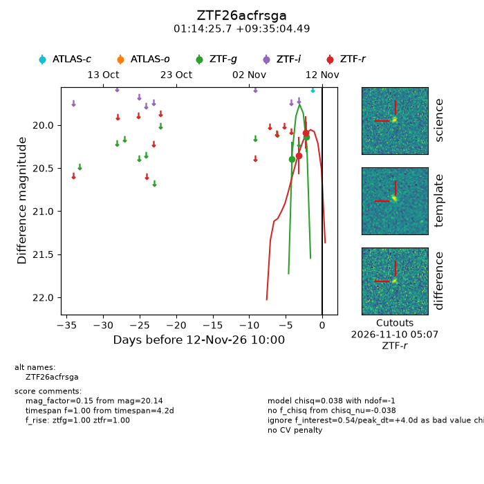
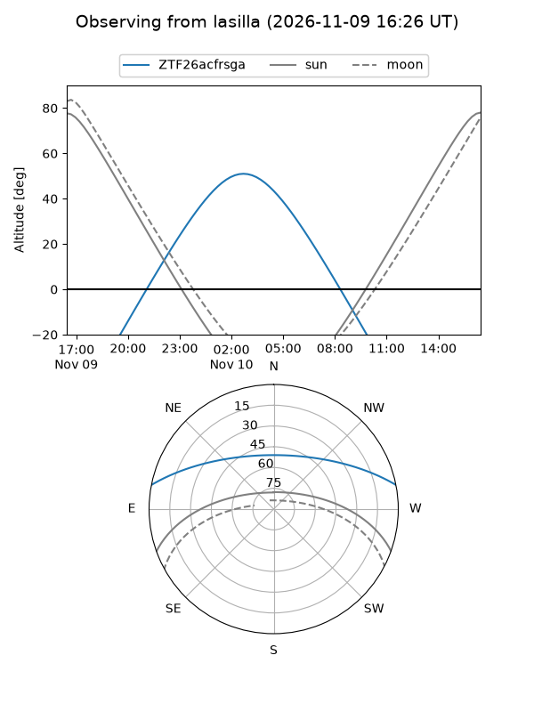
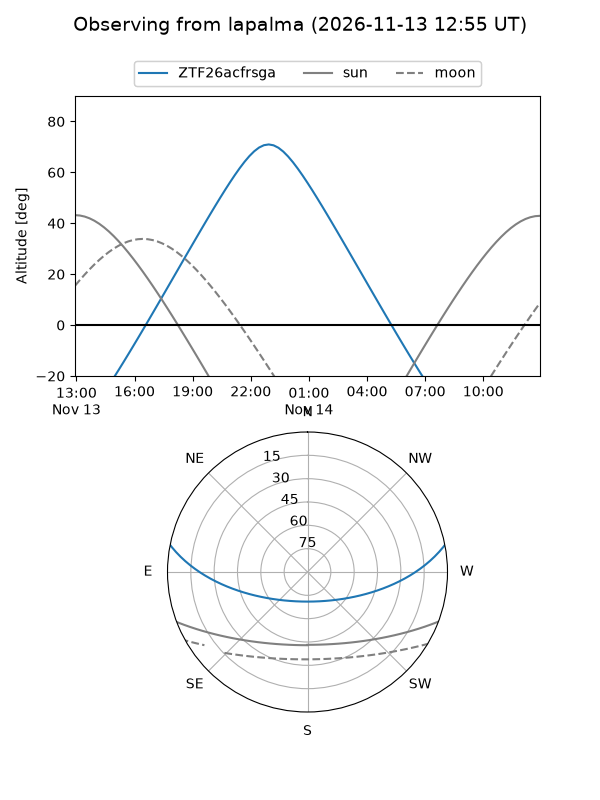
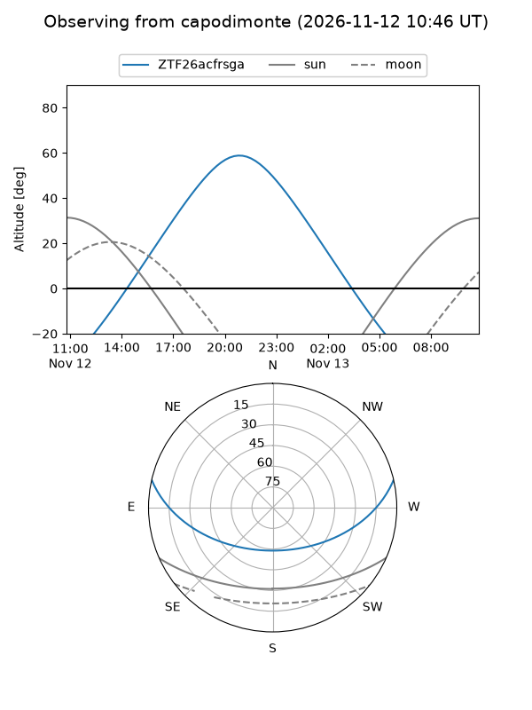
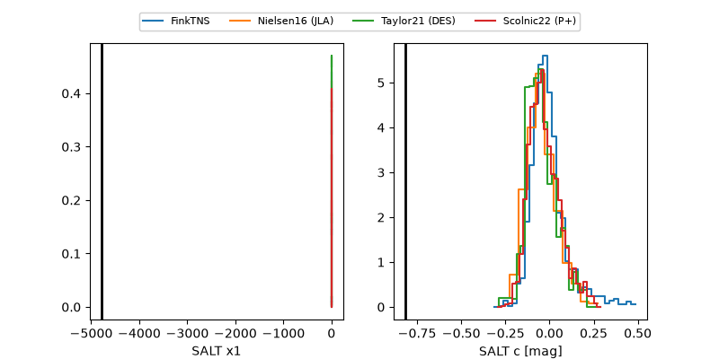

ZTF26acfrsga
Target ZTF26acfrsga at 2026-11-12 10:02
Aliases and brokers:
FINK-ZTF: ztf.fink-portal.org/ZTF26acfrsga
Lasair-ZTF: lasair-ztf.lsst.ac.uk/objects/ZTF26acfrsga
ALeRCE-ZTF: alerce.online/object/ZTF26acfrsga
Direct TNS query: direct search
alt names
ZTF26acfrsga (ztf,fink_ztf)
Coordinates:
equatorial (ra, dec) = 18.6070,+9.58458
equatorial (HMS+DMS) = 01:14:25.69,+09:35:04.49
galactic (l, b) = (132.3465,-52.86640)
Flags:
peak dt: +4.0
Photometry:
last ztfg=20.14, ztfr=20.09
2 ztfg, 2 ztfr detections
Lightcurve

Visibility



Additional plots
